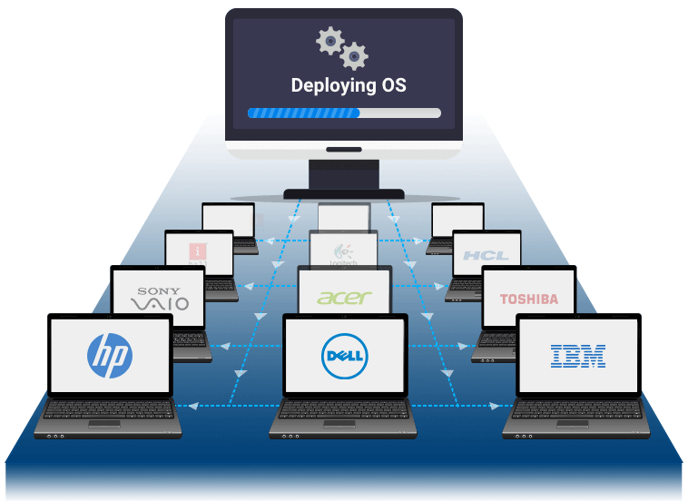
Qu'est-ce que le déploiement de système d'exploitation (OS)
Le déploiement d’un système d’exploitation (OS) est le processus d’installation,
de configuration et de mise à jour d’un OS sur un ordinateur, un serveur ou un appareil,
afin de garantir que les systèmes sont opérationnels, sécurisés et adaptés aux besoins
de l’organisation. Cette démarche implique généralement la création d’une image
standardisée du système (appelé "master"), sa distribution sur
plusieurs appareils via le réseau, puis la personnalisation selon les besoins
spécifiques des utilisateurs ou de l’entreprise. Le déploiement d’OS est une étape
clé dans la gestion de l’infrastructure informatique, permettant d’assurer cohérence,
efficacité et sécurité lors de l’intégration ou du renouvellement de postes de travail
Présentation du projet de Serveur FOG
Ce projet vise à mettre en place un serveur FOG pour le déploiement d’images système sur un parc informatique,
en environnement virtualisé (ESXi) avec gestion réseau via un VLAN dédié (VLAN 11) configuré sur pfSense (IP passerelle 172.16.11.254).
La démarche inclut une fiche comparative entre FOG, Clonezilla et AOMEI Backupper,de la documentation utilisateur et technicien ainsi que le détail de l’installation de FOG dans le contexte de la société M2L (projet de fin d'année).
FOG est le plus adapté pour le déploiement massif, la gestion centralisée et l’automatisation sur un réseau d’entreprise
Clonezilla est puissant mais plus technique et moins ergonomique, adapté aux usages ponctuels ou avancés
AOMEI Backupper est simple d’usage et efficace pour le clonage local ou la sauvegarde, mais moins adapté au déploiement en réseau
Schéma Réseau du projet
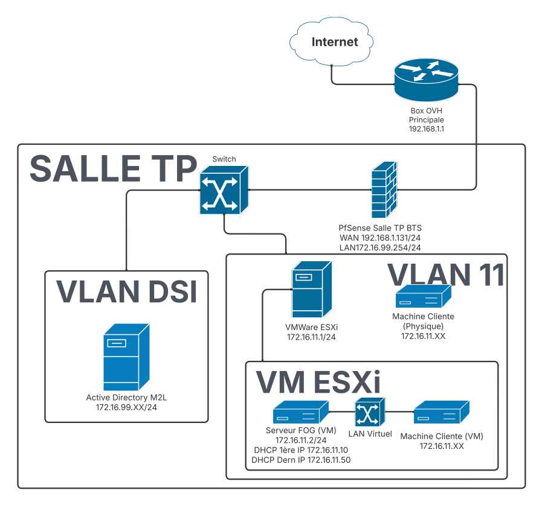
Installation de FOG sur ESXi
1. Préparation de l’environnement
Création d'une machine virtuelle sur ESXi dédiée au serveur FOG (ex : 2 vCPU, 4 Go RAM, 128 Go disque)
Configurer la carte réseau de la VM pour qu'elle pointe bien sur le VLAN 11
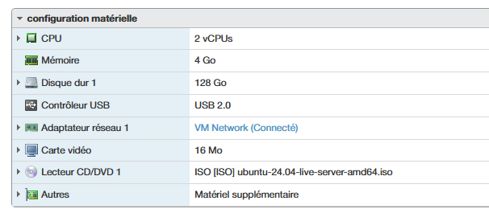
Spécifications du serveur FOG
2. Configuration réseau sur pfSense
Créer le VLAN 11 sur l’interface physique reliée au réseau ESXi
Attribution de l’adresse 172.16.22.254/24 à l’interface VLAN 11 sur pfSense
Vérifier que le routage est opérationnels sur ce VLAN et qu'aucun DHCP n'est activé.
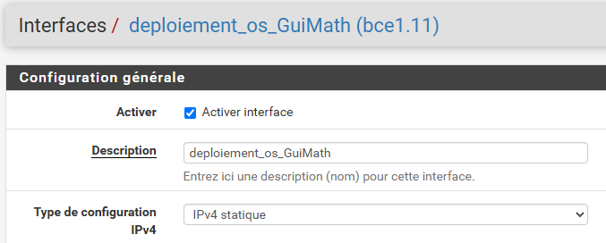
Interface pfSense du VLAN 11
3. Installation de l’OS sur la VM
Installation de Ubuntu Server 24.04 sur la machine
Configuration de l’adresse IP statique sur le sous-réseau 172.16.11.0/24 (172.16.11.2)
Installation de OpenSSH pour utilisation de PuTTy
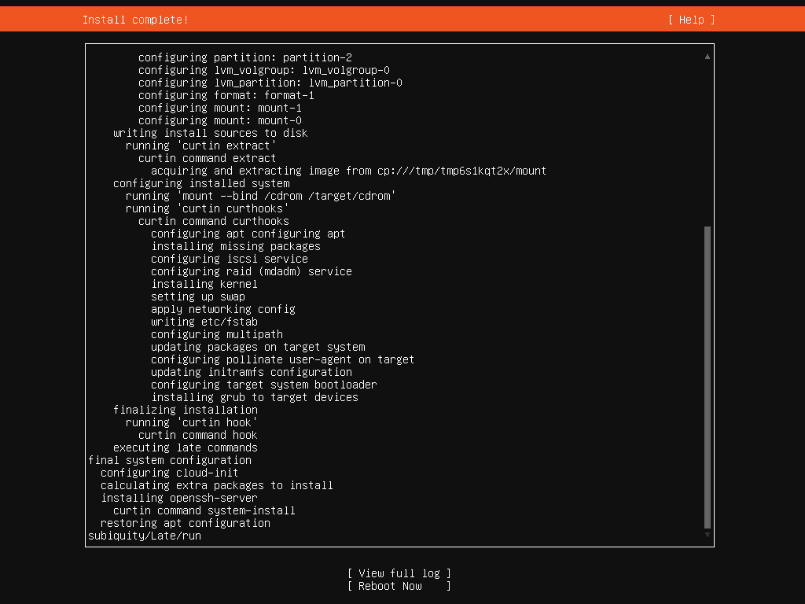
4. Installation de FOG
Téléchargement de la dernière version de FOG depuis le site officiel
Extraction de l’archive et lancement du script d’installation (./installfog.sh)
Indiquer l’IP statique de la VM (172.16.22.2)
Choisir l’interface réseau correspondant au VLAN 11
Configuration du DHCP via le script (172.16.11.10 à 172.16.11.50)
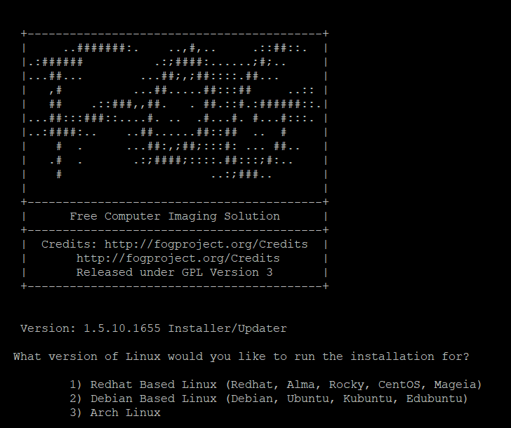
Lancement du script d'installation FOG
5. Interface FOG
Accéder à l’interface web de FOG via http://172.16.22.2/fog
Connexion à l'utilisateur de base FOG
Création des Utilisateurs de l'interface
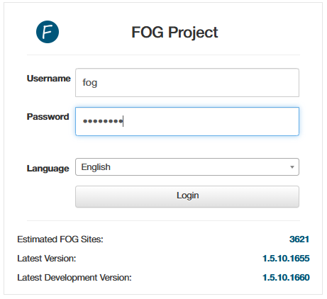
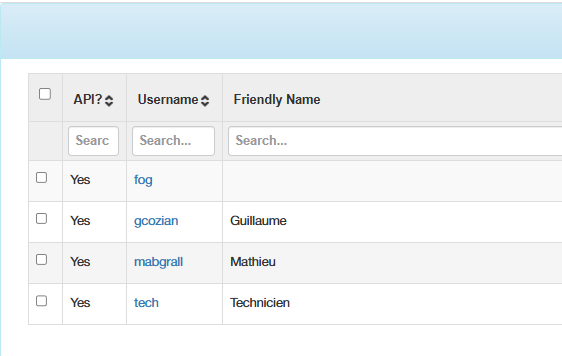
Gestion des Utilisateurs FOG
6. Création des Masters et tâches de capture
Configuration du Menu PXE pour ne faire apparaître que les options utiles
Préparation des postes "masters" Windows 10 et Linux Mint
Création des Images sur l'interface FOG
Enregistrement des machines "masters" via PXE
Association des "masters" à leurs images dédiées
Création des tâches de capture et les effectuer en bootant les machines "masters" sur le PXE
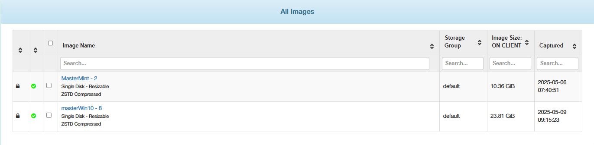
Gestion des Images sur le serveur
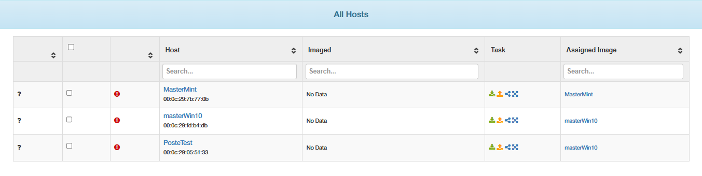
Gestion des Hôtes enregistrés sur le serveur
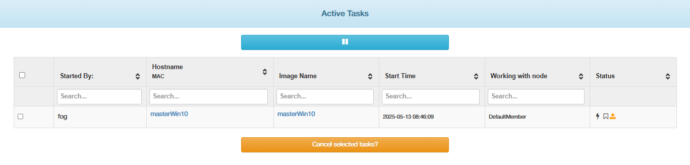
Gestion des Tâches actives
6. Création des tâches de déploiement
Enregistrement d'un nouveau poste à déployer depuis le PXE
Sur l'interface FOG association de la machine à l'image souhaitée
Création de la tâche de Déploiement et démarrage de la machine en réseau
La tâche s'effectuera automatiquement jusqu'à ce que le poste soit prêt à l'usage
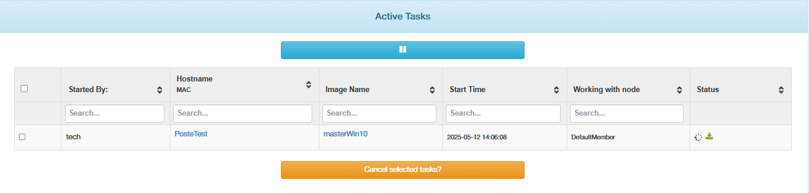
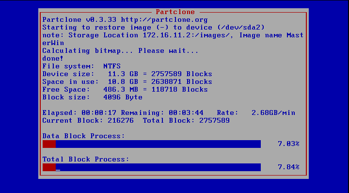
Déploiement avec l'interface graphique Partclone
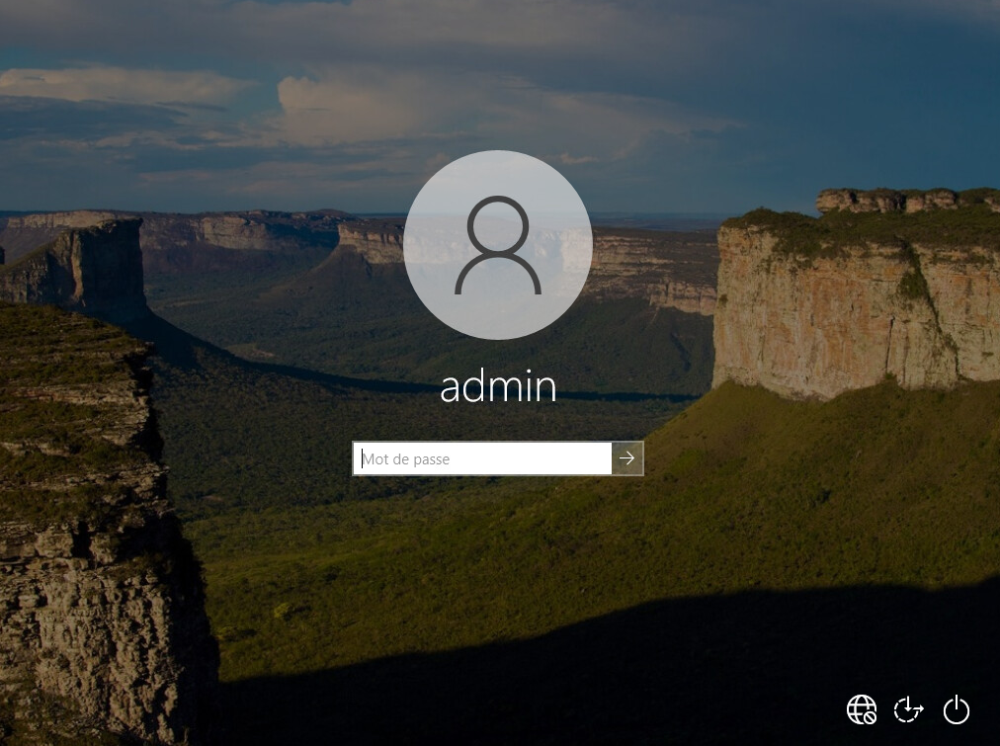